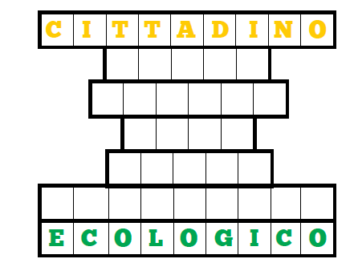

Cittadini a basso consumo
Abbiamo visto quanto le attività quotidiane
“pesino” sull'ambiente e come
semplici gesti (riparare una perdita
d'acqua dell'impianto domestico, modificare
le nostre abitudini di consumo,
ridurre, riutilizzare e differenziare i rifiuti)
possano diventare il carburante
della sostenibilità. Il nostro percorso
termina sul retro di questo pannello,
con altri consigli che possono aiutarci
a diventare meno “energivori” e a trasformarci
in eco-cittadini.
La strada che il cittadino deve percorrere
per diventare ecologico non è difficile:
è breve e può essere anche… un gioco.
Come quello che ti proponiamo qui sotto:
devi partire dalla parola CITTADINO
e arrivare a ECOLOGICO attraverso una catena formata da cinque parole
(OPERATORE, OSSO, PIATTO, PRIMO
e RADIO) ciascuna legata a quella che
precede e a quella che segue per associazione
di idee. Te le forniamo in ordine
sparso: a te il compito di individuare la
sequenza corretta.
